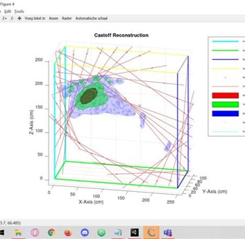
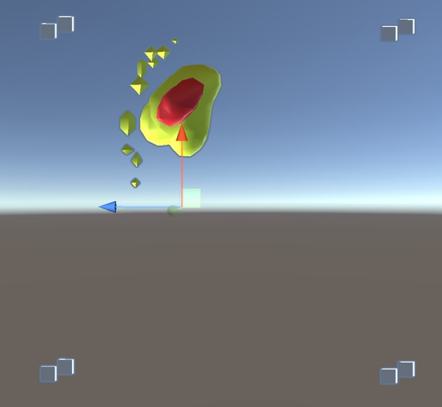

Hololens Blood Pattern Analyses
3D models during investigation
During my period in the school banks I had to choose a minor. The one I chose was called: mixed reality in forensic. It was about the role forensic researchers play at a crime scene and how mixed reality can help the researchers improve their work.
The first weeks I learned a lot about the work they do whilst thinking about a way to help them. We found a researcher that had a formula for making a 3d model that shows where and how the force of impact hit the victim. We decided to use that for our project.
We needed a program inside the hololens 2 that measures the blood patterns and export them in a .csv file. That file was put in octave on the computer. Octave rendered the model out and exported them inside the hololens 2 so that researchers can look at the model in real time. The program was made in Unity.

